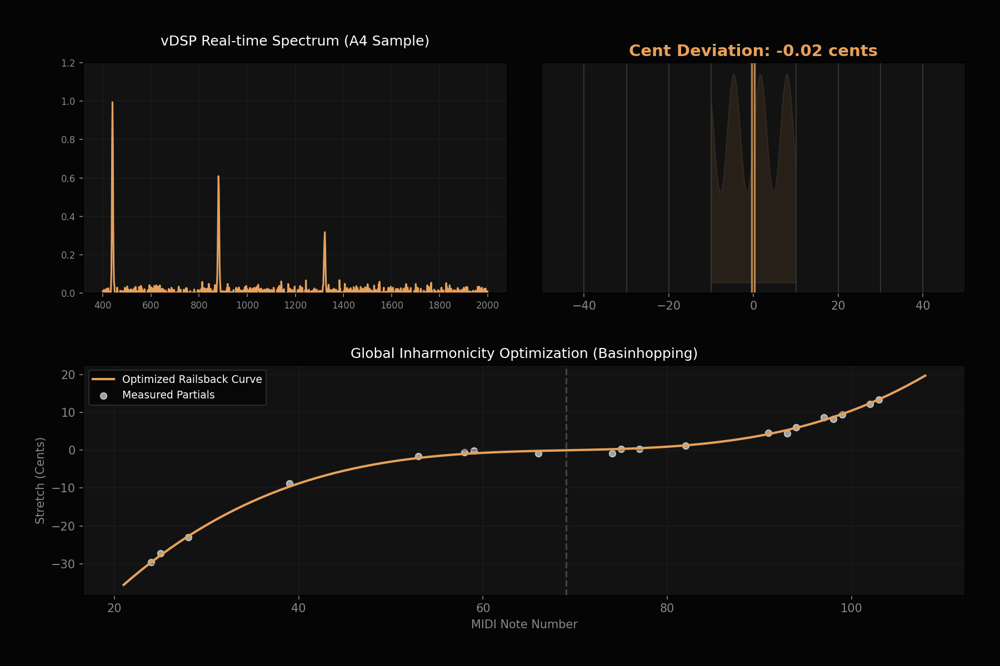
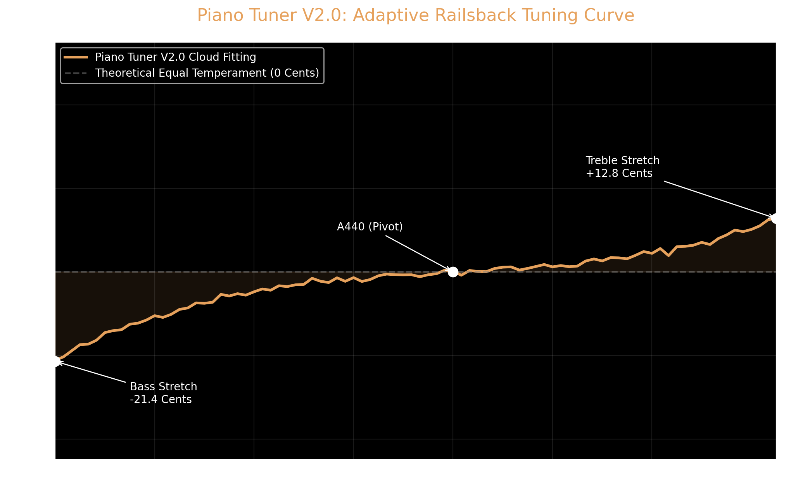
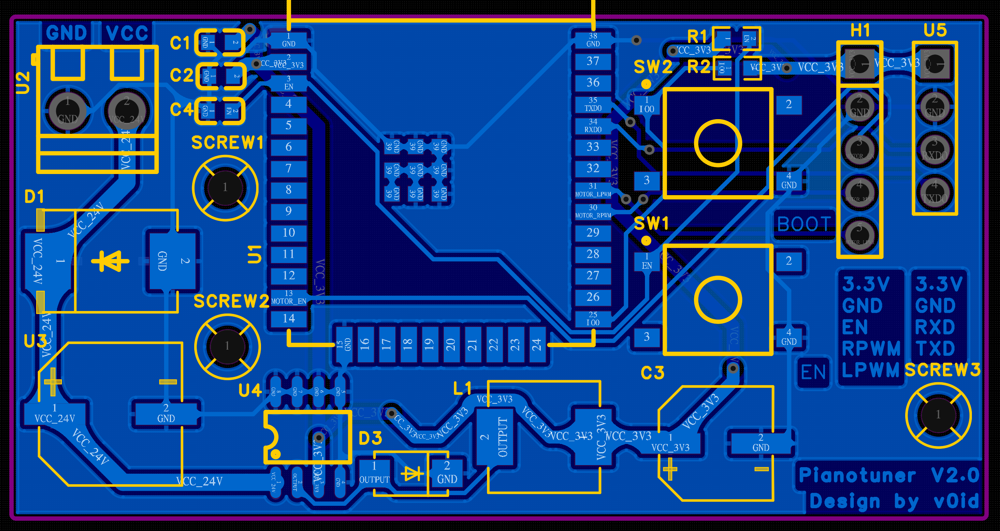

让整台钢琴，回到出厂般的精准——自动、稳定、可进化。 Bring your whole piano back to factory-fresh precision — automatic, steady, ever-evolving.
一个套在弦轴上的精密执行器，配 iPhone App。你把关音色，它替你逐弦精准拧到位——整台 88 键，稳定一致。A precision actuator on the tuning pin, paired with an iPhone app. You guide the result; it turns every pin to pitch — all 88 keys, consistently.
一台琴几千次拧弦，不再靠手腕硬扛——电机精准发力，远离腱鞘劳损。Thousands of pin-turns per piano, off your wrists — the motor does the torque, sparing the repetitive strain.
自动闭环逐弦调准、不知疲倦，单台更快，一天能多接几单。Automated closed-loop tuning, tireless and quick — fit more pianos into a day.
±1 音分机器级一致，不受疲劳与听力状态影响，最难的低音也稳。Machine-consistent to ±1 cent — unaffected by fatigue, steady even in the hardest bass.
无需懂乐理。电机出力，数学交给 iPhone。No music theory. The motor lifts; your iPhone does the math.
套在弦轴上，BLE 稳定连接，OTA 随时更新算法。Attach to the pin, connect over BLE, update algorithms anytime via OTA.
iPhone 本机生成专属 Railsback 曲线，带来 ±1 音分级心理声学拉伸。Your iPhone generates a bespoke Railsback curve with ±1-cent psychoacoustic stretch.
空心杯无刷 FOC 电机 + 125:1 行星减速箱，闭环编码器、40dB 静音、软启动防扭矩突变。Coreless FOC motor + 125:1 planetary gearbox — closed-loop encoder, 40dB quiet, soft-start torque protection.
最难调的低音区，端侧信号引擎替你驯服。The bass is the hardest — an on-device signal engine tames it.
智能剔除被锤击声污染的"假泛音"，只信可靠谐波，把玄学低音变成可复现的科学。Rejects hammer-corrupted false partials and trusts only reliable harmonics — turning bass into reproducible science.
专有超分辨技术实现实验室级低音分辨率，看清每一丝偏差。Proprietary super-resolution delivers lab-grade bass resolution — every fraction of a cent, visible.
在不放慢响应速度的前提下，把频率精度再提一个量级——实时与精准，这次都要。Sharpens frequency accuracy by an order of magnitude — without slowing the response. Real-time and precise, at once.
在嘈杂环境中智能过滤干扰、避开击键瞬间的杂音，只锁定干净信号，吵闹房间里也不乱跳。Intelligently filters interference and the hammer's attack noise, locking only on clean signal — no jitter in a noisy room.
用历史帧交叉验证每一次读数，过滤单帧跳变，示数稳、不闪烁。Cross-checks each reading against recent frames to filter out single-frame glitches — steady, never flickering.
低音区要求多阶谐波同时稳定锁定才推进，从源头杜绝"锁错音"。In the bass, it advances only when multiple harmonics lock together — no false locks.
配套 App 集成实时频谱、动态力矩监测与端侧拉伸引擎，iPad/iPhone 上每个物理细节一目了然。 The app brings real-time spectrum, torque monitoring and an on-device stretch engine — every detail visible on iPad or iPhone.
在 TestFlight 下载 iOS AppDownload iOS App on TestFlightiOS 原生硬件加速实现超低延迟频谱分析，嘈杂环境也能稳定锁定音准。iOS-native hardware acceleration delivers ultra-low-latency analysis that locks pitch even in noisy rooms.
端侧优化引擎实时渲染你这台钢琴的专属拉伸曲线，调音告别"玄学"。An on-device optimizer renders your piano's own stretch curve in real time — no more guesswork.

从麦克风怎么放，到每台琴的成长曲线，复杂的事我们替你想好了。From where to hold your phone to each piano's progress over time — the hard parts, handled.
5 星实时评级帮你找到最佳采集位置，零基础也能采到专业级数据。A live 5-star meter guides you to the best spot — pro-grade data, no experience needed.
按琴保存档案与误差趋势：琴主看琴变好，调音师多一份随身客户档案。Per-piano profiles and error trends — owners watch it improve, pros get a pocket CRM.
授权后匿名贡献数据助算法进化，默认关闭、随时可关。Opt in to share anonymous data and help the algorithm improve — off by default, always optional.
空心杯无刷 FOC 电机 + 125:1 行星减速箱，5.39 N·m 额定 / 24 N·m 峰值，闭环编码器、40dB 静音、3 年免维护，无惧顽固弦轴。Coreless FOC motor + 125:1 gearbox, 5.39 N·m rated / 24 N·m peak, closed-loop encoder, 40dB quiet, 3-year maintenance-free — handles the most stubborn pins.
系统支持低音区单弦、中音区双弦、高音区三弦独立剥离引导采样，保证原始声学数据的极端纯净。Guides you to isolate and sample monochord, bichord, and trichord zones independently, ensuring ultimate data purity.
采用高性价比执行节点，将算力移至手机端侧。极限压缩硬件成本与体积，让专业调音触手可及。Uses a cost-effective execution node, moving computation onto the phone. Drastically reducing hardware cost and size.
采用加密配对认证，未经授权的设备无法驱动电机，从源头杜绝误连与恶意操控。Encrypted pairing authentication means unauthorized devices can't drive the motor — blocking mis-connections and tampering at the source.
系统为每台钢琴记忆其不谐性档案，同一台钢琴二次调音可直接跳过重复的不谐性采集，开机即调。Each piano's inharmonicity profile is remembered, so a returning piano skips repeat sampling — start tuning right away.
回扳时连续采集 5 次测量取中位数再校正，有效抵消弦轴摩擦带来的回弹误差，锁定目标音高。On overtwist, five measurements are taken and the median drives the correction, canceling the rebound from pin friction to lock onto the target pitch.
调律曲线在本机生成，核心数据无需上云。我们不卖数据、不做广告追踪。Your tuning curve is computed on-device — core data never needs the cloud. We don't sell data or run ad tracking.
App 已在 TestFlight 开放——现在就能把 iPhone 当作专业调音表与实时频谱分析仪；硬件预售即将开始。The app is live on TestFlight — use your iPhone as a pro tuning meter and real-time spectrum analyzer today; hardware pre-orders open soon.
端侧自研优化引擎根据你琴弦的独特不谐性，拟合出专属的黄金拉伸曲线。 An on-device optimizer fits a bespoke golden stretch curve to your strings' unique inharmonicity.
✓ 基础调音无需任何订阅即可使用。下方个性化曲线服务为可选升级，不影响设备的日常使用。 ✓ Basic tuning works with no subscription. The personalized curve below is an optional upgrade — it doesn't affect everyday use of the device.
年度算法服务包Annual Algorithm Service


双分区断电保护，不拆机即可通过蓝牙更新 FOC 驱动逻辑。Dual-bank power-loss-protected OTA updates FOC logic over BLE, no disassembly.
自研优化引擎，基于实测不谐性（B 值）在本机毫秒级生成专属拉伸曲线，全程无需联网。A proprietary optimizer computes a bespoke stretch curve on-device in milliseconds from each piano's measured inharmonicity (B) — no internet required.
Ø28mm 空心杯无刷 FOC 电机 + 125:1 行星减速箱（5.39 N·m 额定 / 24 N·m 峰值，47 rpm），传动背隙 ≤0.033°（2 弧分），闭环磁编码器、40dB 静音、3 年免维护、PID 响应 < 50ms。Ø28mm coreless FOC motor + 125:1 gearbox (5.39 N·m rated / 24 N·m peak, 47 rpm), ≤0.033° (2 arcmin) backlash, closed-loop magnetic encoder, 40dB quiet, 3-year life, PID response < 50ms.
比传统调音，更便宜，也更精准。Cheaper than manual tuning — and more precise.
| 核心维度DIMENSIONS | 传统人工调音MANUAL TUNING | PIANO TUNER (V2.0)PIANO TUNER |
|---|---|---|
| 进化能力Upgradability | 无None | 支持 BLE OTA 无线升级Supports BLE OTA |
| 调音精度Precision | 依赖个人听觉Subjective | ±1 音分 (±1 Cents) + 自然拉伸±1 Cents + Natural Stretch |
| 扭矩输出Torque | 受人力限制Human Limited | 5.39 N·m 额定 / 24 N·m 峰值5.39 N·m rated / 24 N·m peak |
| 传动背隙Drive Backlash | 无此概念N/A | ≤0.033°（2 弧分）≤0.033° (2 arcmin) |
| Railsback 曲线Curve | 凭经验估算Estimated | 端侧实时拟合On-Device Fitting |
| 专业版扩展 (Pro)Pro Tier | -- | 专业级低音分析 · PDF 健康报告 · Turbo 加速Pro bass analysis · PDF reports · Turbo speed |
算算它为你省下、或赚回多少。See how much it saves — or earns — you.
终结每年高昂的人工调音支出，让钢琴始终处于巅峰状态。End expensive annual tuning fees and keep your piano in peak condition.
解锁专业版功能，用极速调音和数字化报告实现业务溢价。Unlock Pro features for faster tuning and premium digital reports.
第一时间收到开售通知，或现在就下载 App 试用。Be first to know when it ships — or try the app today.
安全、精度、适配，逐一说清。Safety, precision, compatibility — answered.
验证"算法+电机"替代人工的可行性：基础频域分析、第一代手工 PCB、步进电机闭环测试。 Validated "algorithm + motor": basic frequency analysis, first handmade PCB, stepper closed-loop test.
2026 年 3 月引入 BLE OTA，并重构端侧曲线模块，加入 ±1 音分心理声学拉伸与相邻音自然过渡。 March 2026: added BLE OTA and rebuilt the on-device curve module with ±1-cent psychoacoustic stretch and smoother note transitions.
现在加入内测，你的调音器将随算法更新同步进化。Join the beta now and your tuner evolves with every algorithm update.
知识产权保护声明：Piano Tuner 整机硬件结构及全闭环控制逻辑已进入发明专利申请程序 (专利申请号: 202610321775.1)。未经授权，严禁任何形式的商业拆解、逆向工程或仿造，违者必究。 INTELLECTUAL PROPERTY NOTICE: Piano Tuner's hardware architecture and closed-loop control logic are patent pending (Application No. 202610321775.1). Unauthorized commercial disassembly, reverse engineering, or imitation is strictly prohibited.